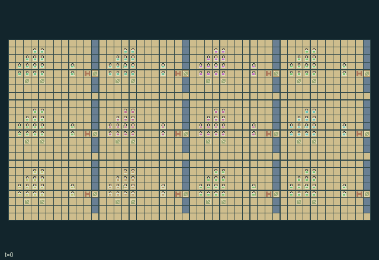

GI246 · Highland Treaty Roads

Trade cargo between twelve cities while maintaining highland routes, negotiating physical seal treaties and delivering timber before mine-induced collapse. Each city seeks three foreign cargo receipts.
Identity and original contract
192 independently actionable roles; 16 discrete commands per role; 3642 native observation columns per role; original horizon 896 steps. Declared per-step reward range: -2 to 2.0. Observation regime: partially_observable.
Source SHA-256: 5a484b4b762a57e511b0360257fcd6de1fc7047eb2676f9511b587fd8ac1c1e5
The objective, rewards, population, map and horizon remain original. A preview is not a success claim.
Objective and gameplay
Trade cargo between twelve cities while maintaining highland routes, negotiating physical seal treaties and delivering timber before mine-induced collapse. Each city seeks three foreign cargo receipts.
Extraction raises quarry stress and starts delayed rockfall. Timber physically delivered to a slope prevents collapse only while brace reserve remains. A courier carries issuer seal to locally present foreign representative and then a gate. Ratification grants reciprocal foreign bridge entry; each entry transfers one actual coin from traveler to owner treasury. Long public ford routes remain alternatives.
- Each citizen has a native action. Builders quarry/brace, couriers issue seals, growers plant and representatives sign at their own city.
- Carry stone and timber physically. Quarrying raises stress; its four-tick countdown can cause road collapse unless timber braces survive.
- Work at the actual slope to add timber or spend stone clearing its rubble. Co-occupancy is allowed.
- Carry an issuer seal to another city and present it while its representative signs; carry the signed seal to either city gate.
- Ratification grants both cities 96 ticks of reciprocal bridge access. Foreign entry spends one traveler coin and credits the owner treasury.
- Each sector southern edge has a long public ford route, trading travel time against tolls and treaty effort.
- Survey local stress/countdown, then show it or hand carried cargo/seals to an adjacent waiting actor.
- Gate boards, sites, actors and terrain are visible only within the selected role radius-three square.
Ending: Every city has received at least three foreign cargos, or all actors have lost health; otherwise H=896. This is an in-game completion rule, not a scientific performance gate.
What this game explores
Information, sensing & communication: Who knows a fact, when it was measured, and whether it was communicated are separate state variables. Test memory or communication using only the same role-visible evidence.
Commitment, exchange & governance: Promises consume time, liquidity, access or material. Separate an announced agreement from a binding commitment and from its eventual delivery; log cancellation and expiry too.
Complementary production & service: A useful outcome requires ordered stages, scarce equipment or another role's capability. Measure real completed products and resource circulation rather than counting intermediate actions as success.
Joint transport & shared access: Positions, load geometry, occupancy and persistent access constrain whose action can succeed next. Distinguish physical handoff, shared controls and simultaneous force from a cosmetic cooperation label.
Survival, protection & rescue: Protection and repair alter another role's future feasible actions. Record losses, exposure, rescue and infrastructure as well as delivery; survival is determined by the actual kernel.
These are questions supported by rule structure, not observed learning effects.
Play it: operating walkthrough
crucibles play --game gi246Keep Python running and open its printed address. Select this game, set a seed and press Create session. The game itself is always English.
Assign a role range to Host with Assign / take over, or Assign all roles. Invite a second participant with Create player invitation, then assign a disjoint subset. Every original role is available.
For every owned role choose a legal command and press Queue. Arrow keys / WASD queue a declared directional action for the current role camera when available. Space or Advance one joint step advances everyone together. Non-directional games use the selectors.
Unqueued roles use the labelled untrained uniform-legal policy. Take over or release roles before the next step without resetting. Full-state debug is privileged and permanently logged; role cameras preserve permissions. Close the session to retain logs. Server restart does not restore sessions.
Complete command reference
IDs and English labels exactly match the manifest. Availability depends on role, resources, location and phase. An available action can still have no productive effect.
0·Wait / receive cargo or local report
1·Move north
2·Move east
3·Move south
4·Move west
5·Collect city grain, ripe terrace grain, or builder quarry/timber resource
6·Sell carried cargo to foreign city with two treasury coins
7·Builder at slope: spend timber to brace or stone to clear
8·Courier at own city: obtain unsigned seal
9·Present unsigned carried seal at another city for local signature
10·Representative at own city: countersign locally presented seals
11·Ratify signed seal at issuer or partner gate for reciprocal access
12·Grower: spend grain to seed empty terrace
13·Record local quarry/slope stress and countdown on survey
14·Show survey to adjacent waiting actor
15·Hand cargo/seal and show survey to adjacent empty waiting actor
Roles and capability identifiers
These original role names describe capabilities, not interchangeable skins. Check each owned role's legal selector before planning handoffs.
agent_0·builder; group0, member0
agent_1·courier; group0, member1
agent_2·grower; group0, member2
agent_3·representative; group0, member3
agent_4·builder; group0, member4
agent_5·courier; group0, member5
agent_6·grower; group0, member6
agent_7·representative; group0, member7
agent_8·builder; group0, member8
agent_9·courier; group0, member9
agent_10·grower; group0, member10
agent_11·representative; group0, member11
agent_12·builder; group0, member12
agent_13·courier; group0, member13
agent_14·grower; group0, member14
agent_15·representative; group0, member15
agent_16·builder; group1, member0
agent_17·courier; group1, member1
agent_18·grower; group1, member2
agent_19·representative; group1, member3
agent_20·builder; group1, member4
agent_21·courier; group1, member5
agent_22·grower; group1, member6
agent_23·representative; group1, member7
agent_24·builder; group1, member8
agent_25·courier; group1, member9
agent_26·grower; group1, member10
agent_27·representative; group1, member11
agent_28·builder; group1, member12
agent_29·courier; group1, member13
agent_30·grower; group1, member14
agent_31·representative; group1, member15
agent_32·builder; group2, member0
agent_33·courier; group2, member1
agent_34·grower; group2, member2
agent_35·representative; group2, member3
agent_36·builder; group2, member4
agent_37·courier; group2, member5
agent_38·grower; group2, member6
agent_39·representative; group2, member7
agent_40·builder; group2, member8
agent_41·courier; group2, member9
agent_42·grower; group2, member10
agent_43·representative; group2, member11
agent_44·builder; group2, member12
agent_45·courier; group2, member13
agent_46·grower; group2, member14
agent_47·representative; group2, member15
agent_48·builder; group3, member0
agent_49·courier; group3, member1
agent_50·grower; group3, member2
agent_51·representative; group3, member3
agent_52·builder; group3, member4
agent_53·courier; group3, member5
agent_54·grower; group3, member6
agent_55·representative; group3, member7
agent_56·builder; group3, member8
agent_57·courier; group3, member9
agent_58·grower; group3, member10
agent_59·representative; group3, member11
agent_60·builder; group3, member12
agent_61·courier; group3, member13
agent_62·grower; group3, member14
agent_63·representative; group3, member15
agent_64·builder; group4, member0
agent_65·courier; group4, member1
agent_66·grower; group4, member2
agent_67·representative; group4, member3
agent_68·builder; group4, member4
agent_69·courier; group4, member5
agent_70·grower; group4, member6
agent_71·representative; group4, member7
agent_72·builder; group4, member8
agent_73·courier; group4, member9
agent_74·grower; group4, member10
agent_75·representative; group4, member11
agent_76·builder; group4, member12
agent_77·courier; group4, member13
agent_78·grower; group4, member14
agent_79·representative; group4, member15
agent_80·builder; group5, member0
agent_81·courier; group5, member1
agent_82·grower; group5, member2
agent_83·representative; group5, member3
agent_84·builder; group5, member4
agent_85·courier; group5, member5
agent_86·grower; group5, member6
agent_87·representative; group5, member7
agent_88·builder; group5, member8
agent_89·courier; group5, member9
agent_90·grower; group5, member10
agent_91·representative; group5, member11
agent_92·builder; group5, member12
agent_93·courier; group5, member13
agent_94·grower; group5, member14
agent_95·representative; group5, member15
agent_96·builder; group6, member0
agent_97·courier; group6, member1
agent_98·grower; group6, member2
agent_99·representative; group6, member3
agent_100·builder; group6, member4
agent_101·courier; group6, member5
agent_102·grower; group6, member6
agent_103·representative; group6, member7
agent_104·builder; group6, member8
agent_105·courier; group6, member9
agent_106·grower; group6, member10
agent_107·representative; group6, member11
agent_108·builder; group6, member12
agent_109·courier; group6, member13
agent_110·grower; group6, member14
agent_111·representative; group6, member15
agent_112·builder; group7, member0
agent_113·courier; group7, member1
agent_114·grower; group7, member2
agent_115·representative; group7, member3
agent_116·builder; group7, member4
agent_117·courier; group7, member5
agent_118·grower; group7, member6
agent_119·representative; group7, member7
agent_120·builder; group7, member8
agent_121·courier; group7, member9
agent_122·grower; group7, member10
agent_123·representative; group7, member11
agent_124·builder; group7, member12
agent_125·courier; group7, member13
agent_126·grower; group7, member14
agent_127·representative; group7, member15
agent_128·builder; group8, member0
agent_129·courier; group8, member1
agent_130·grower; group8, member2
agent_131·representative; group8, member3
agent_132·builder; group8, member4
agent_133·courier; group8, member5
agent_134·grower; group8, member6
agent_135·representative; group8, member7
agent_136·builder; group8, member8
agent_137·courier; group8, member9
agent_138·grower; group8, member10
agent_139·representative; group8, member11
agent_140·builder; group8, member12
agent_141·courier; group8, member13
agent_142·grower; group8, member14
agent_143·representative; group8, member15
agent_144·builder; group9, member0
agent_145·courier; group9, member1
agent_146·grower; group9, member2
agent_147·representative; group9, member3
agent_148·builder; group9, member4
agent_149·courier; group9, member5
agent_150·grower; group9, member6
agent_151·representative; group9, member7
agent_152·builder; group9, member8
agent_153·courier; group9, member9
agent_154·grower; group9, member10
agent_155·representative; group9, member11
agent_156·builder; group9, member12
agent_157·courier; group9, member13
agent_158·grower; group9, member14
agent_159·representative; group9, member15
agent_160·builder; group10, member0
agent_161·courier; group10, member1
agent_162·grower; group10, member2
agent_163·representative; group10, member3
agent_164·builder; group10, member4
agent_165·courier; group10, member5
agent_166·grower; group10, member6
agent_167·representative; group10, member7
agent_168·builder; group10, member8
agent_169·courier; group10, member9
agent_170·grower; group10, member10
agent_171·representative; group10, member11
agent_172·builder; group10, member12
agent_173·courier; group10, member13
agent_174·grower; group10, member14
agent_175·representative; group10, member15
agent_176·builder; group11, member0
agent_177·courier; group11, member1
agent_178·grower; group11, member2
agent_179·representative; group11, member3
agent_180·builder; group11, member4
agent_181·courier; group11, member5
agent_182·grower; group11, member6
agent_183·representative; group11, member7
agent_184·builder; group11, member8
agent_185·courier; group11, member9
agent_186·grower; group11, member10
agent_187·representative; group11, member11
agent_188·builder; group11, member12
agent_189·courier; group11, member13
agent_190·grower; group11, member14
agent_191·representative; group11, member15
Information and observation permissions
Self fields plus Chebyshev radius-three local map/entity fields; no within-square occlusion. Hidden rows and outside-map patch cells zero with presence. Dynamic remote state is not observed. Event rendering must suppress hidden entity events; debug/full-state view is separate. The explicitly listed own team score summaries are self information.
The GIF is full-state debug and may reveal hidden entities or private state. Train on obs[agent], not the picture, state tree or another role's private row. Field slices and visibility are in the original manifest.
Reinforcement-learning integration
import jax
from crucibles_jaxmarl import make
env = make("gi246")
key = jax.random.PRNGKey(0)
key, rk, ak, sk = jax.random.split(key, 4)
obs, state = jax.jit(env.reset)(rk)
actions = env.sample_actions(ak, state)
obs, state, rewards, dones, info = jax.jit(env.step_env)(sk, state, actions)
done = dones["__all__"]Observations are float32 vectors of width 3642; actions are scalar int32; masks have 16 entries. Supply all 192 roles each transition. Masked sampling is an engineering reference, not a trained learner.
step_env retains terminal data without reset. step performs outer autoreset and keeps terminal data in info["raw_state"] and info["raw_observation"]. Use dones["__all__"] for episode boundaries; separate completion, failure and time limit in analysis.
JIT or vmap equal identities and shapes. Split independent reset, policy and transition keys. Group different shapes explicitly; do not shrink the population or horizon. Host rendering stays outside training.
Training questions and fair evaluation
Define valid completion from the objective before fitting. Preserve original rewards and also report real deliveries/services, losses, resource state, unresolved episodes and per-role returns. Animation is not a reward signal.
Who knows a fact, when it was measured, and whether it was communicated are separate state variables. Test memory or communication using only the same role-visible evidence.
Promises consume time, liquidity, access or material. Separate an announced agreement from a binding commitment and from its eventual delivery; log cancellation and expiry too.
A useful outcome requires ordered stages, scarce equipment or another role's capability. Measure real completed products and resource circulation rather than counting intermediate actions as success.
Positions, load geometry, occupancy and persistent access constrain whose action can succeed next. Distinguish physical handoff, shared controls and simultaneous force from a cosmetic cooperation label.
Protection and repair alter another role's future feasible actions. Record losses, exposure, rescue and infrastructure as well as delivery; survival is determined by the actual kernel.
Compare memory, communication or centralized critics under matched actor information. Declare critic access; keep actor inputs role-filtered. Match partner/opponent distributions, masks, compute and checkpoint selection. Final tests never enter fitting or selection.
Independent training runs or source-pairing blocks are inferential units; episodes from one policy are not independent training replications. Save hashes, keys, versions, device, time and cost. Negative, zero, failed and indeterminate outcomes are valid. No trained checkpoint or target score is supplied.
Classification and evidence
Overlapping editorial labels are reading aids, not proof of novelty, difficulty, strategic equivalence or learning effects.
- Information, sensing & communication
- Evidence
manifest.task.observation_access: Self fields plus Chebyshev radius-three local map/entity fields; no within-square occlusion. Hidden rows and outside-map patch cells zero with presence. Dynamic remote state is not observed. Event rendering must suppress hidden entity events; debug/full-state view is separate. The explicitly listed own team score summaries are self information.
- Evidence
manifest.actions.0: Wait / receive cargo or local report
- Evidence
manifest.actions.13: Record local quarry/slope stress and countdown on survey
- Commitment, exchange & governance
- Evidence
manifest.task.objective: Trade cargo between twelve cities while maintaining highland routes, negotiating physical seal treaties and delivering timber before mine-induced collapse. Each city seeks three foreign cargo receipts.
- Evidence
manifest.task.interaction: Extraction raises quarry stress and starts delayed rockfall. Timber physically delivered to a slope prevents collapse only while brace reserve remains. A courier carries issuer seal to locally present foreign representative and then a gate. Ratification grants reciprocal foreign bridge entry; each entry transfers one actual coin from traveler to owner treasury. Long public ford routes remain alternatives.
- Evidence
manifest.actions.8: Courier at own city: obtain unsigned seal
- Complementary production & service
- Evidence
manifest.task.objective: Trade cargo between twelve cities while maintaining highland routes, negotiating physical seal treaties and delivering timber before mine-induced collapse. Each city seeks three foreign cargo receipts.
- Joint transport & shared access
- Evidence
manifest.task.objective: Trade cargo between twelve cities while maintaining highland routes, negotiating physical seal treaties and delivering timber before mine-induced collapse. Each city seeks three foreign cargo receipts.
- Evidence
manifest.task.interaction: Extraction raises quarry stress and starts delayed rockfall. Timber physically delivered to a slope prevents collapse only while brace reserve remains. A courier carries issuer seal to locally present foreign representative and then a gate. Ratification grants reciprocal foreign bridge entry; each entry transfers one actual coin from traveler to owner treasury. Long public ford routes remain alternatives.
- Evidence
manifest.actions.0: Wait / receive cargo or local report
- Survival, protection & rescue
- Evidence
manifest.task.objective: Trade cargo between twelve cities while maintaining highland routes, negotiating physical seal treaties and delivering timber before mine-induced collapse. Each city seeks three foreign cargo receipts.
- Evidence
manifest.task.interaction: Extraction raises quarry stress and starts delayed rockfall. Timber physically delivered to a slope prevents collapse only while brace reserve remains. A courier carries issuer seal to locally present foreign representative and then a gate. Ratification grants reciprocal foreign bridge entry; each entry transfers one actual coin from traveler to owner treasury. Long public ford routes remain alternatives.
- Evidence
scene.rules.1: Carry stone and timber physically. Quarrying raises stress; its four-tick countdown can cause road collapse unless timber braces survive.
Source, receipts and preview limits
The world-only English GIF replays saved untrained legal actions through the original kernel. At most 25 actual endpoints include initial and terminal state; no invented interpolation. It is full-state debug, not the role observation.
Original source, observation slices, manifest and mechanism
Native receipt · Presentation receipt
Engineering passes do not establish learning. Nonzero floating differences remain recorded and undetermined; no new tolerance was introduced. Human scores remain unverified.